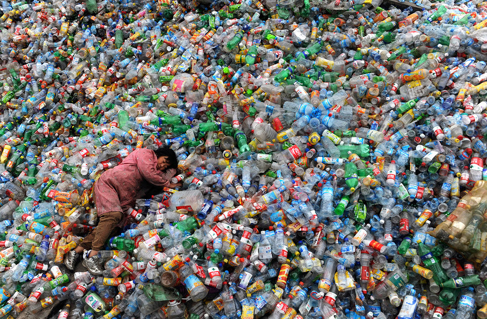

Lundi 10 avril dernier, les employés du siège européen de Coca-Cola, à Londres, ont vu l’entrée de leurs bureaux bloquée par une sculpture monumentale, déposée là par Greenpeace UK, en signe de protestation contre la politique paresseuse et opaque de la multinationale en matière de traitement du plastique. Un geste qui vise aussi plus largement à informer l’opinion publique de l’urgence écologique que représente la pollution plastique des océans..
Coca-Cola cache l’étendue de son empreinte plastique et refuse de prendre des mesures significatives pour empêcher la pollution de nos océans par ses produits » : c’est sur ce préambule que débute un rapport publié par Greenpeace la semaine dernière, accompagné d’une action d’éclat sur le parvis du siège social de la société, à Londres : le message est assené de tout le poids (2,5 tonnes) d’une statue de l’artiste Jason deCaires Taylor, qui représente une famille de vacanciers sur une plage, indifférente aux oiseaux marins régurgitant avec peine du plastique à leurs pieds.

L’empreinte coupable de Coca-Cola
Dans son rapport, Greenpeace mélange les données publiées par Coca-Cola et des estimations de son cru pour les compléter. L’organisme rappelle que Coca-Cola vend plus 1,9 milliards de doses de soda par jour à travers le monde, ce qui élève sa production annuelle de bouteilles en plastique à environ 110 milliards de bouteilles. Comme l’a d’ailleurs reconnu la multinationale en 2010 dans son rapport écologique, ces produits font partie des déchets que l’on peut trouver répandus à tort sur les littoraux à travers le monde ; une masse de plastique qui pollue massivement les océans au rythme de l’équivalent d’une benne à ordure par minute.
Ces déchets ne sont pas seulement une gêne esthétique pour les amateurs de farniente l’été. Les plus gros morceaux sont ingérés par les requins ou les oiseaux marins, qui, incapables de les digérer, les régurgitent – s’ils n’en meurent pas avant – sous forme de microplastiques qui vont ensuite mettre en danger toute la chaîne alimentaire océane.
Coca-Cola cache l’étendue de son empreinte plastique et refuse de prendre des mesures significatives pour empêcher la pollution de nos océans par ses produits
S’ajoute à cette pollution des océans la pollution associée à la fabrication des bouteilles neuves, issue d’hydrocarbures polluants. En effet, le rapport montre que Coca-Cola est loin d’avoir atteint son objectif de 2015 de 25% des bouteilles fabriquées à partir de plastique recyclé (rPET), avec à peine 7% de ses produits emballés dans un tel matériau. La multinationale, ajoute le rapport, a même reconnu que cet objectif était devenu un challenge;avec la diminution récente du coût du pétrole, matière première du plastique vierge. Pourtant, le plastique utilisé pour ces bouteilles est tout à fait recyclable et certains acteurs du secteur, comme PepsiCo sur la ligne 7Up, ont d’ores et déjà atteint le 100 % recyclé.
Trop de bouteilles à usage unique
Il apparaît que le cœur du problème n’est pas le matériau des bouteilles, mais bien l’usage qu’il en est fait. Là où Coca-Cola fait beaucoup d’effort pour réduire la quantité de plastique utilisée pour fabriquer une bouteille, Greenpeace appelle à un passage massif au packaging réutilisable.
Le principe est simple : au lieu de recycler une bouteille après une seule utilisation, l’entreprise peut encourager les consommateurs à rapporter la bouteille vide sur le point d’achat, où elle est récupérée contre une petite caution, nettoyée, remplie à nouveau et renvoyée sur les étalages du magasin. Ironie du sort, Coca-Cola était un pionner de ce système avec sa mythique bouteille de verre au début du siècle, avec un taux de réutilisation proche de 96% à la fin des années 1940.
Aujourd’hui, le constat n’est plus le même : depuis plusieurs années, la proportion de contenants réutilisables dans les ventes de Coca-Cola ne fait que diminuer ; de plus d’un tiers (33%) en 2008, celle-ci est passée à moins d’un quart (25%) en 2015. Pourtant, les systèmes de collecte efficaces sont aujourd’hui largement répandus, notamment en Allemagne, en Suède et au Danemark. Dans un tel système, une bouteille de verre peut être réutilisée 50 fois avant d’être recyclée, 15 fois pour une bouteille de plastique.
Résultats opaques et lobbying
Au lieu d’adhérer à ces modèles écologiques, Coca-Cola s’y oppose en secret, refuse de publier des statistiques précises sur son empreinte plastique et se cache derrière de nombreux efforts de « greenwashing ».
Dans ses pages illustrées d’oiseaux agonisants, le rapport accuse : « des courriels internes divulgués au printemps 2016 révèlent l’intention de Coca-Cola de résister à certains éléments du programme européen sur l’économie circulaire ». Ces données interceptées par Greenpeace indiquent les efforts déployés par la multinationale pour combattre la mise en place de système de collecte, en faisant une des cibles principales des 900 000€ qu’elle investit annuellement en lobbying au niveau européen.
Le plus effarant de cette affaire reste peut-être l’absurdité d’une telle démarche : certes, la mise en place généralisée de systèmes de collecte demanderait une adaptation de la part de Coca-Cola (et donc des coûts), mais le rapport de Greenpeace souligne qu’une telle adaptation s’est déjà faite avec succès dans plusieurs pays, sans menacer la santé de l’entreprise. Au lieu de tendre vers une solution logique et responsable, Coca-Cola se cache derrière un marketing « vert » bruyant et peu efficace, comme l’initiative « Keep America Beautiful », une organisation qui insiste sur le rôle du consommateur dans la pollution en éclipsant celui du fabricant.
En tant qu’acteur majeur du secteur, Coca-Cola devrait prendre la tête de la transformation écologique des modes de consommation, en favorisant un double mouvement : le passage au 100 % recyclé dans les matériaux d’emballage, mais aussi, plus important encore, la sensibilisation du public à la réutilisation et à la réduction maximale des emballages – car une bouteille, qu’elle soit en plastique recyclé, réutilisé ou bioplastique, reste une menace pour la vie des océans.
Sources : Consobglobe / Greenpeace
Pour commander notre nouveau Livre-Journal, cliquez sur l’image !